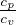
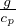
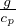
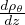
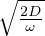
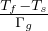
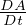
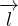
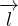

-
∇p = ρ Legge di equilibrio idrostatico
-
pV = νRT Legge dei gas
-
p =  nmvrms2
nmvrms2
-
vrms =
-
l = = Libero cammino medio
-
Fv = V v Deformazione pistone (f coefficiente di fluiditá, V v velocitá di deformazione)
-
η =  lmvrms = Viscositá dinamica [Pa s]
lmvrms = Viscositá dinamica [Pa s]
-
τ = η Sforzo di taglio per fluidi newtoniani (empirica)
-
 = -kT∇T Legge di Fourier
= -kT∇T Legge di Fourier
-
 = -kT∇T = -vrmslc∇T Legge Fourier per i gas (c calore specifico per molecola) da cui
kT =
= -kT∇T = -vrmslc∇T Legge Fourier per i gas (c calore specifico per molecola) da cui
kT =  vrmslc = vrms ~ T
vrmslc = vrms ~ T
-
∇⋅ = -kT∇2T
= -kT∇2T
-
 = DT∇2T con D
T diffusivitá termica DT = con cui stimiamo il tempo caratteristico
di conduzione τcond =
= DT∇2T con D
T diffusivitá termica DT = con cui stimiamo il tempo caratteristico
di conduzione τcond =
-
= DT∇2T = + ⋅∇T dove  ⋅∇T é il termine avvettivo che ci permette di stimare
il tempo caratteristico di avvezione τavv =
⋅∇T é il termine avvettivo che ci permette di stimare
il tempo caratteristico di avvezione τavv =
-
= -DF∇Φ Prima legge di Fick, J flusso di particelle, Φ concentrazione
-
= -DF∇Φ = - vrmsl∇Φ da cui DF =
vrmsl∇Φ da cui DF =  vrmsl che per il gas perfetto DF =
vrmsl che per il gas perfetto DF =  vrmsl =
vrmsl =

-
= DF∇2Φ Seconda legge di Fick che deriva dalla conservazione del numero di particelle
totali diffuse nel volume, da cui stimiamo il tempo caratteristico di diffusione τF =
-
γ = Tensione superficiale [Nm-1]
-
pin - pest = γ( + ) Legge di Laplace sulla curvatura delle superfici in discontinuitá di
pressione
-
γSL + γLGcosθC = γSG Equazione di Young della capillaritá
-
h = 2γ Legge di Yurin
-
W = - + Be-s∕δ Energia reticolare dove il primo termine é il termine attrattivo dato
dalla forza di Coulomb, A é la costante di Madelung determinata dalla geometria, s il passo
reticolare
+ Be-s∕δ Energia reticolare dove il primo termine é il termine attrattivo dato
dalla forza di Coulomb, A é la costante di Madelung determinata dalla geometria, s il passo
reticolare
-
β = - Compressibilitá
-
K = = -V  Incompressibilitá o "Bulk Modulus"
Incompressibilitá o "Bulk Modulus"
-
K = = -V  = V derivante da dW = -pdV
= V derivante da dW = -pdV
-
W(s) = W0+()Δs2+()Δs3+... = W0+κΔs2-fΔs3+... sviluppo dell’energia
del reticolo
-
0 = W(s) + K = W0 +  kBT
kBT
-
= = Energia totale di un atomo mediata sul reticolo per unitá di massa
-
cv = 3 Legge di Dulong Petit dalla definizione di cv =
-
Δa = Passo d’oscillazione dell’atomo approssimando W(s) al secondo ordine, quindi
per oscillazione simmetrica
-
Δs = ±Δa + ε,ε > 0 Passo d’oscillazione approssimando al terz’ordine
-
ε ≈ f = Dipendenza di epsilon dalla temperatura
-
s0′ = s0 + ε
-
αl = =  = Coefficiente di espansione termica Lineare per un solido
= Coefficiente di espansione termica Lineare per un solido
-
αv = 3αl Coefficiente di espansione termica Volumetrica per un solido
-
ΔW = ΔQ + ΔL Primo principio della termodinamica
-
δeS = Secondo principio della termodinamica
-
dS = δeS + δiS dove δiS ≥ 0
-
dS = Secondo principio della termodinamica per processi reversibili
-
H = E + pV Entalpia (calore scambiato a p costante)
-
dH = TdS + V dp
-
F = E - TS Energia libera di Helmoltz
-
dF = -pdV - SdT
-
G = E - TS + pV Potenziale di Gibbs
-
dG = V dp - SdT
-
p = ρRT Legge dei gas per gas specifico essendo Ru costante universale dei gas e R = Ru∕μ
-
p = ∑
ini Legge di Dalton
-
α = ()p = -()p Coefficiente di espansione termica (per il gas perfetto α = )
-
βT = -()T =  ()T Compressibilitá isoterma
()T Compressibilitá isoterma
-
KT = = -V ( )T = ρ()T Incompressibilitá isoterma o Bulk Modulus
)T = ρ()T Incompressibilitá isoterma o Bulk Modulus
-
= -βT(p-p0) + α(T -T0) Equazione di stato per sostanza qualsiasi (solido soggetto a
sforzo isotropo, fluido in condizioni statiche)
-
cp = T()p = ()p Calore specifico a pressione costante
-
cv = T()V = ()V Calore specifico a volume costante
-
R = cp - cv Per il gas perfetto
-
γ = 
-
ΔE = ()V ΔT + ()TΔV Energia interna per sostanza qualsiasi
-
ΔE = cvΔT - pΔV + T()V ΔV
-
dE(T,V ) = cvdT + [αTKT - p]dV
-
cp = cv + α2TKTV Relazione fra i calori specifici per sostanza qualsiasi
-
ρcp( + ⋅∇T) = ρQ + k∇2
T Equazione del calore
-
Ra = > Racr Condizione di instabilitá per fluido viscoso (η) incomprimibile
soggetto a gradiente verticale di temperatura ( < 0 condizione necessaria) essendo Ra =
-
< Γa < 0 Condizione necessaria (piú stringente) per fluido comprimibile
-
Γa = = - Gradiente adiabatico per gas perfetto
-
Γa = = - Gradiente adiabatico per sostanza generica
-
G1(p,T) = G2(p,T) Potenziale di Gibbs per transizione di fase in equilibrio
-
() = Equazione di Clausius-Clapeyron per la transizione di fase
-
L = T(ΔS)T = T(ΔS)p Calore latente o Entalpia di transizione
-
dSlat = dw2 Variazione infinitesima di entropia dovuta al passaggio di fase
-
dSsen = cpdT -dp Variazione infinitesima di entropia dovuta al trasferimento di calore
sensibile
-
dS = dStot = dSsen + dSlat =  cpdT -dp + dw2
cpdT -dp + dw2
-
 = Γa +
= Γa +  Gradiente termico in presenza di cambiamento di fase
Gradiente termico in presenza di cambiamento di fase
-
ΔTf =
-
pe = Ce- Pressione di vapor saturo lontano dalla T critica
-
 = - = -
= - = -
 ≈ -5.45K∕Km Gradiente termico per atmosfera umida
dove Ra = Ru∕μ
≈ -5.45K∕Km Gradiente termico per atmosfera umida
dove Ra = Ru∕μ
-
Θ(z) = T(z) -∫
z0zΓadz Temperatura potenziale
-
 =
=  - Γa Instabilitá generica per sostanza compressibile
- Γa Instabilitá generica per sostanza compressibile
-
= - > 0 Instabilitá per sostanza compressibile dove  é il gradiente adiabatico
di densitá e ρpot é la densitá potenziale
é il gradiente adiabatico
di densitá e ρpot é la densitá potenziale
-
Per oceano/mantello = - dove Ks = ρ()S incompressibilitá adiabatica
-
p0()γ = p()γ densitá potenziale per il gas perfetto = -
con condizione di instabilitá  > 0 ⇐⇒ < 0
-
N(t) = N(0)e-λt Legge di decadimento radioattivo (t tempo,λ probabilitá di decadimento dei
nuclei nell’intervallo di tempo)
-
H(t′) = ∑
HiCieλit′ Produzione di calore della roccia al tempo t’, Ci le concentrazioni dei
nuclei radioattivi
-
= +  [eλt - 1] Isocrona di roccia intera
[eλt - 1] Isocrona di roccia intera
-
yi = c + xi[eλt - 1]
-
T(z) = -H+z+Ts Temperatura in funzione della profonditá dalla legge di conduzione
stazionaria per valori di H costanti
-
Ti(z) = -++Ti-1 Generalizzazione della precedente per un sistema
multistrati dove teniamo in considerazione la continuitá della temperatura (T+ = T-) e la
continuitá del flusso di calore (q+ = q-) fra gli strati dove gli indici i - 1 indicano l’ultimo
valore assunto dallo strato precedente
-
Per crosta terrestre H(z) = H0e-z∕δ ovvero k = ρδH0e-z∕δ + c
1 dove avendo assunto
h >> δ possiamo dire che c≈qm da cui ricaviamo contributo crostale qs = qm+qc = qm+[ρH]δ
da cui otteniamo
-
T(z) = Ts + z + (1 - e-z∕δ) Geoterma continentale
-
q(r) = Flusso alla distanza r dal centro del pianeta per pianeta sferico con r dell’o.d.g del
raggio del pianeta
-
T(r) = Ts+(a2-r2) Temperatura alla distanza r per pianeta sferico (a raggio del pianeta)
-
T(z,t) = ℜ{Z(z)f(t)} = ℜ{(ΔTe-z∕δe-iz∕δ)(eiωt)} = ΔTe-z∕δcos(ωt -) Riscaldamento
periodico di un semispazio da sorgente esterna dove abbiamo definito δ =  lo spessore di
penetrazione
-
T(z,t) = Ts+(T0-Ts)erf() Raffreddamento istantaneo di un semispazio a Temperatura
T0 posto a contatto con un termostato Ts dove erf é la Error function erf(η) = ∫
0ηe-t2
dt
-
q(z,T) = (T0 - Ts)e-η2
= (T0 - Ts)e- Flusso di calore del raffreddamento
istantaneo, ottenuto da q = k = k essendo η =
-
t = ≈ 6 × 106anni Stima dell’etá della Terra di Kelvin eguagliando il flusso di calore
q = k al flusso del raffreddamento istantaneo
-
T(z,t) = Ts + (T0 - Ts)erf() Geoterma oceanica nel sistema di riferimento solidale con
la litosfera in movimento (stesso risultato del raffreddamento istantaneo)
-
T(z,x) = Ts + (T0 - Ts)erf() Geoterma oceanica nel sistema di riferimento fermo
rispetto alla dorsale, essendo v la velocitá di deriva della litosfera rispetto alla dorsale, x
la distanza percorsa dall’origine, da cui si puó derivare flusso di calore analogo a quello del
semispazio
-
zL = 2.32 = 2.32 Spessore della Litosfera dato dall’aver compiuto il 90%
dell’escursione termica
-
w = 2 Topografia isostatica dei fondali oceanici (essendo w la profonditá del
fondale rispetto alla quota della sommitá della dorsale), derivata dal principio di isostasia
-
h = stima dell’altezza di un ghiacciaio trascurando avvezione e depositi di ghiaccio
(stima irrealistica), sono noti T0eTs temperatura alla base e temperatura esterna
-
T(z) = Ts +  a(1 - erf(u(z))) = Ts + a(1 - erf())) temperatura
in un ghiacciaio a base fredda da cui considerando la bse vicina al punto di fusione
a(1 - erf(u(z))) = Ts + a(1 - erf())) temperatura
in un ghiacciaio a base fredda da cui considerando la bse vicina al punto di fusione
Tf = Ts + a che ci permette di stimare l’altezza del ghiacciaio a h = ()2
piú realisticamente
-
A′i1i2...ik = Ci1j1Ci2j2...CikjkAi1i2...ik Definizione di tensore
-
δij Delta di Kronecker (δij = 1 quando i = j, 0 altrove)
-
eijk Tensore di Ricci (eijk = 1 per permutazioni pari di 123, -1 per permutazioni dispari, 0
altrove)
-
eijkeklm = δilδjm - δimδjl Identitá e - δ
-
= εij+ωij Gradiente dello spostamento diviso in componente simmetrica e antisimmetrica
-
εij =  ( + ) Tensore infinitesimo di deformazione
( + ) Tensore infinitesimo di deformazione
Nel sistema di riferimento degli autovettori normalizzati la variazione relativa lungo la
componente i é il valore εii = , viceversa con i≠j εij =  (α +β) angoli di deformazione
nel piano
(α +β) angoli di deformazione
nel piano
-
= εij Variazione relativa di distanza fra due punti distanti dxi
-
εkk = ∇⋅ = Traccia del tensore é variazione volumetrica relativa
-
εij(I) =  εkkδij Componente isotropa tensore deformazione
εkkδij Componente isotropa tensore deformazione
-
ε′ij = εij - εkkδij Componente deviatorica tensore deformazione
εkkδij Componente deviatorica tensore deformazione
-
 = ∫
V (t){ + ∇⋅ [a(,t) ]}dV Derivata di grandezze additive A dove a(
]}dV Derivata di grandezze additive A dove a( ,t) é la
densitá di A e il prodotto a
,t) é la
densitá di A e il prodotto a il flusso di A
il flusso di A
-
+ ∇⋅ (ρ) = 0
+ ρ∇⋅ = 0 Equazione di continuitá (dalla conservazione della massa)
= 0 Equazione di continuitá (dalla conservazione della massa)
-
= ∫
V (t)ρdV Applicazione dell’equazione di continuitá a grandezze Γ dipendenti dalla
massa
-
Ti() = nkτki Trazione su una superficie di normale n note le componenti τki
-
fi + = ρ Equazioni del moto
-
τij = τji Dall’equazione del momento angolare
-
p = - τkk Pressione media dovuta agli sforzi normali
τkk Pressione media dovuta agli sforzi normali
-
σ′1 = σ1 - τkk
τkk
σ′2 = σ2 - τkk
τkk
σ′3 = σ3 - τkk
τkk
-
Smax =  (σmax - σmin) Sforzo di taglio massimo
(σmax - σmin) Sforzo di taglio massimo
-
0 = ρgδi3 + Stato di sforzo in prossimitá della superficie della crosta
-
τij = Δτij -plitδij Ambienti tettonici, Δτij fornisce la componente deviatorica
σ′i = σi + p
τ′kk = 0 ⇐⇒ σ′1 + σ′2 + σ′3 = 0
σ′z = σ′1 Ambiente distensivo, faglia normale
σ′z = σ′3 Ambiente compressivo, faglia inversa
σ′z = σ′2 Faglia trasforme, compressione e distensione sul piano xy
-
tan(2β) = Teoria della fagliazione di Anderson avendo fs > 0 coefficiente di attrito statico
δ = 90 - β > 45 Ambiente distensivo, faglia normale
δ = β < 45 Ambiente compressivo, faglia inversa
Per faglia trasforme β < 45 angolo fra piano ed asse di massima compressione
-
+ (ρvi) = 0 Equazione di continuitá
-
ρ = fi + i = 1,2,3 Equazioni del moto
-
= + ∫
Bτij εijdV = + Equazione dell’energia per un continuo
εijdV = + Equazione dell’energia per un continuo
 = ∫
Bτij
= ∫
Bτij εijdV Lavoro di deformazione
εijdV Lavoro di deformazione
Δ ε = τjiΔεij Variazione nell’intervallo Δt
ε = τjiΔεij Variazione nell’intervallo Δt
Δε = ΔV + ΔF Lavoro di deformazione su dV
ΔV = -p Lavoro speso per cambiare il volume
ΔF = τ′ijΔε′ij Lavoro speso per cambiare la forma a V costante (τij = pδij + τ′ij)
-
F = kΔu Legge di Hooke
-
τij = Cijklεkl Relazione costitutiva che lega τij ad εij (21 costanti libere)
τij = λεkkδij + 2μεij Relazione costitutiva per materiale isotropo (λ,μ costanti di Lamé)
 τkk = Kεkk = -Δp Legame parti isotrope, K incompressibilitá, bulk modulus
τkk = Kεkk = -Δp Legame parti isotrope, K incompressibilitá, bulk modulus
τ′ij = 2με′ij Legame parti deviatoriche, μ rigiditá, shear modulus
K = λ +  μ
μ
K = = -V
KT = -V ()T Incompressibilitá isoterma
KS = -V ( )S Incompressibilitá adiabatica
)S Incompressibilitá adiabatica
-
εij = (τij - λεkkδij) Relazione costitutiva inversa, deformazione dato lo sforzo εkk =
τkk∕(3λ + 2μ)
εij = (τij -τkkδij)
-
τkk = τ11 Stato di sforzo uniassiale
E = = μ Modulo di Young, trazione su allungamento relativo
ν = - =  Modulo di Poisson, contrazione trasversale sulla variazione relativa
longitudinale
Modulo di Poisson, contrazione trasversale sulla variazione relativa
longitudinale
-
ρ0 = fi + Equazione del moto per piccole deformazioni
-
ρ0 = + (λ + μ)(∇(∇⋅)) + μ∇2 Equazione di Cauchy-Navier per le onde elastiche
Equazione di Cauchy-Navier per le onde elastiche
-
= c2∇2φ Equazione d’onda di D’Alembert, c velocitá di propagazione dell’onda
ϕ = ∇⋅ = εkk Onde P (Primae), longitudinali
= εkk Onde P (Primae), longitudinali
V P = Velocitá onde P
ψ = ∇× Onde S (Secundae), trasversali
Onde S (Secundae), trasversali
V S = Velocitá onde S
-
Fluidi Viscosi Newtoniani
F = η Pistone, velocitá del pistone
Pistone, velocitá del pistone
εij(I) Deformazione isotropa limitata
ε′ij Deformazione deviatorica illimitata
σij Sforzo dovuto al moto del fluido (0 quando fluido in quiete), esclusivamete deviatorico
τij = -pδij + σij Fluido in movimento
eij = =  ( + ) Velocitá di deformazione
( + ) Velocitá di deformazione
τij = -pδij + 2η(eij - ekkδij) Fluido newtoniano di viscositá η
ekkδij) Fluido newtoniano di viscositá η
-
ρ = ρ
= ρ -∇p + η[∇2
-∇p + η[∇2
 +
+  ∇(∇⋅
∇(∇⋅ )] Equazione di Navier-Stokes
ρ = ρ
)] Equazione di Navier-Stokes
ρ = ρ -∇p + η∇2
-∇p + η∇2
 N-S per fluido incomprimibile (∇⋅
N-S per fluido incomprimibile (∇⋅ = 0)
ρ
= 0)
ρ = ρ -∇p Equazione di Eulero, N-S per fluido inviscido (η = 0)
= ρ -∇p Equazione di Eulero, N-S per fluido inviscido (η = 0)
 = + ∇(
= + ∇( ) - ×
) - × ρ(
ρ( + ∇() -
+ ∇() - ×
× ) = ρ
) = ρ -∇p + η[∇2
-∇p + η[∇2
 +
+  ∇(∇⋅
∇(∇⋅ )] N-S in forma vettoriale
)] N-S in forma vettoriale
-
u(z) = z, p(z) = ρg(h - z) + pa Flusso piano di Couette
-
u(z) = (h2 - z2) Flusso 1-D forzato da un gradiente di pressione(k)
-
u(z) = (R2 -r2) Flusso di Poiseuille, Flusso newtoniano in condotti cilindrici, max in r = 0
u =  = R2 =
= R2 =  umax ∝ k Velocitá media del flusso in condotto, (Q portata)
umax ∝ k Velocitá media del flusso in condotto, (Q portata)
-
Transizione alla turbolenza
f = Fattore di attrito (forza di pressione/accelerazione)
Re = Numero di Reynolds (accelerazione/forza viscosa)
Transizione alla turbolenza quando Re > 2200 (sperimentale)
Per flusso laminare f =
Per regime turbolento f = (sperimentale)
-
+ ∇B = × Teorema di Bernoulli (fluido inviscido)
B =  v2 + gz + ∫ Funzione di Bernoulli
v2 + gz + ∫ Funzione di Bernoulli
Flussi stazionari  = 0
= 0
Flussi irrotazionali = ∇× = 0
= 0
 = ∇ϕ Potenziale di velocitá ϕ
+
= ∇ϕ Potenziale di velocitá ϕ
+  v2 + gz + ∫
v2 + gz + ∫  = 0 Teorema di Bernoulli per flusso inviscido irrotazionale
= 0 Teorema di Bernoulli per flusso inviscido irrotazionale
-
∮
γ ⋅ d = 0 Teorema di Kelvin, dato un fluido inviscido barotropico in un sistema
inerziale la circuitazione di
⋅ d = 0 Teorema di Kelvin, dato un fluido inviscido barotropico in un sistema
inerziale la circuitazione di  é costante nel tempo (non si formano vortici)
é costante nel tempo (non si formano vortici)